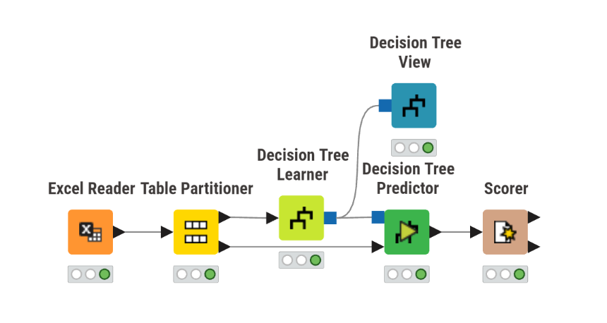
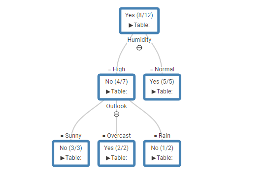

Klasifikasi Menggunakan Decision Tree (Pohon Keputusan)#
Decision Tree adalah salah satu algoritma Machine Learning dalam kategori Supervised Learning yang sangat transparan dan mudah diinterpretasikan. Algoritma ini bekerja dengan cara memecah himpunan data menjadi bagian-bagian yang lebih kecil secara hierarkis berdasarkan aturan keputusan (decision rules), hingga membentuk struktur menyerupai pohon terbalik.
Untuk memahami cara kerjanya, bayangkan permainan “Tebak Tokoh”. Dalam permainan tersebut, Anda akan mengajukan pertanyaan yang paling bisa menyingkirkan banyak kandidat sekaligus (misal: “Apakah tokoh ini perempuan?”). Decision Tree melakukan hal yang sama secara matematis: mencari atribut (pertanyaan) paling krusial untuk membelah data secara berulang hingga mencapai kesimpulan yang pasti.
1. Parameter Model Utama#
Dalam pembentukan Decision Tree pada praktikum ini, kita menggunakan dua pengaturan (hyperparameter) krusial pada node pemodelan:
1.1 Kriteria Pemecahan: Gain Ratio#
Algoritma klasik seperti ID3 menggunakan metrik Information Gain untuk memilih atribut pemecah. Namun, metrik ini memiliki bias logis: ia cenderung memprioritaskan atribut dengan jumlah kategori unik yang sangat banyak (misalnya ID atau Tanggal), yang sebenarnya tidak berguna untuk prediksi prediktif.
Untuk mengatasi bias tersebut, digunakan Gain Ratio. Metrik ini menormalisasi nilai Information Gain dengan membaginya menggunakan SplitINFO (faktor seberapa luas data tersebar pada cabang tersebut). Atribut dengan Gain Ratio tertinggilah yang dinilai paling adil dan logis untuk menjadi Node pemecah.
1.2 Strategi Pemangkasan: No Pruning#
Pruning adalah teknik memotong cabang pohon yang dianggap tidak signifikan untuk mencegah model terlalu rumit dan menghafal data latih (overfitting).
Pada pengaturan No Pruning, pohon diizinkan untuk tumbuh liar dan maksimal hingga menyentuh kondisi paling spesifik di data latih (daun murni/homogen). Strategi ini sangat ideal untuk dataset berukuran kecil (seperti dataset Play Tennis), karena memungkinkan kita untuk mengekstraksi seluruh detail aturan logika tanpa ada yang terpotong.
2. Interpretasi Visual Pohon Keputusan#
Berdasarkan output visual tree dari data latih (yang diakses melalui Decision Tree View), kita dapat mengekstrak aturan logika prediktif yang telah dipelajari oleh model:
Root Node (Akar): Model mendeteksi bahwa Humidity (Kelembapan) adalah faktor dengan nilai Gain Ratio tertinggi, menjadikannya pertanyaan pertama yang paling memengaruhi keputusan akhir.
Cabang Pertama (
Humidity = Normal): Seluruh observasi pada cabang ini memiliki label target homogen (“Yes”). Model langsung membentuk Leaf Node murni.Aturan 1: JIKA
Humidity= Normal, MAKA Prediksi = Yes.
Cabang Kedua (
Humidity = High): Observasi pada cabang ini masih bercampur antara “Yes” dan “No”. Oleh karena itu, pohon membelah diri lagi menggunakan atribut terbaik kedua, yaitu Outlook (Cuaca), yang menghasilkan tiga percabangan daun:Aturan 2: JIKA
Humidity= High DANOutlook= Sunny, MAKA Prediksi = No.Aturan 3: JIKA
Humidity= High DANOutlook= Overcast, MAKA Prediksi = Yes.Aturan 4: JIKA
Humidity= High DANOutlook= Rain, MAKA Prediksi = No (Karena terjadi ketidakpastian rasio 1:1, model dengan No Pruning memutuskan label kelas berdasarkan mayoritas aturan heuristik awal).
3. Implementasi Workflow di KNIME#
Implementasi Decision Tree di dalam KNIME Analytics Platform mengikuti standar alur kerja Machine Learning, yaitu: Persiapan \(\rightarrow\) Pemisahan \(\rightarrow\) Pembelajaran \(\rightarrow\) Prediksi \(\rightarrow\) Evaluasi.
Berikut adalah langkah-langkah konfigurasinya:
Excel Reader: Membaca dataset mentah
Play_Tennis_Dataset.xlsxke dalam workspace.Table Partitioner: Membagi dataset menjadi dua subset independen. Konfigurasi diatur pada mode Relative (%) sebesar 90% untuk Training Set dan 10% untuk Testing Set. Sangat disarankan untuk mengaktifkan opsi Stratified sampling pada kolom
Play Tennisagar rasio kelas target tetap seimbang di kedua subset.Decision Tree Learner: Model diberikan 90% data latih. Pada jendela konfigurasi, atur Class column ke
Play Tennis, Quality measure ke Gain Ratio, dan nonaktifkan opsi Pruning (No Pruning).Decision Tree Predictor: Node ini menerima “Otak/Model” dari port biru Learner dan “Soal Ujian” dari port Testing Set Partitioner, kemudian bertugas mengaplikasikan aturan pohon (Aturan 1-4) untuk memprediksi label baru.
Scorer: Mengevaluasi kinerja prediksi dengan membandingkan kolom label aktual (First column) terhadap kolom prediksi dari model (Second column), menghasilkan nilai Akurasi serta Confusion Matrix.

4. Kesimpulan#
Melalui implementasi dan analisis algoritma Decision Tree pada dataset Play Tennis, terdapat beberapa simpulan utama yang dapat diambil:

Transparansi Logika Model: Algoritma Decision Tree terbukti sangat interpretable (mudah dipahami). Kita dapat secara langsung melihat hierarki keputusan dari pohon visual yang dihasilkan. Model secara matematis mengidentifikasi Kelembapan (Humidity) sebagai faktor penentu utama (akar pohon), yang kemudian diikuti oleh Cuaca (Outlook) sebagai faktor sekunder jika kelembapan sedang tinggi.
Efektivitas Parameter: Penggunaan metrik Gain Ratio terbukti efektif dalam memilih atribut pemecah yang adil dan logis. Di sisi lain, penerapan strategi No Pruning pada dataset berukuran kecil ini memungkinkan kita untuk memetakan dan mengekstraksi aturan (decision rules) secara mendetail hingga mencapai simpul daun yang homogen.
Validasi Alur Kerja: Workflow yang dibangun di KNIME menunjukkan siklus utuh dari klasifikasi Supervised Learning. Dimulai dari pembagian proporsi data yang seimbang (melalui Stratified Partitioner), proses pelatihan model (Learner), hingga evaluasi akurasi prediksi pada data yang belum pernah dilihat sebelumnya (Predictor & Scorer).
Secara keseluruhan, model pohon keputusan ini tidak sekadar memberikan hasil prediksi klasifikasi akhir berupa “Yes” atau “No”, tetapi juga menyajikan insight terstruktur mengenai alasan logis di balik setiap prediksi tersebut.